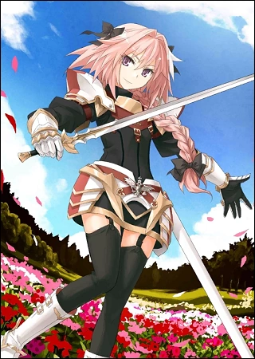

Астольфо
| Аниме: | Судьба/Апокриф (Fate/Apocrypha) |
| Роль: | Райдер Черных (Rider of Black) |
| Пол: | Мужской |
| Рост: | 164 см |
| Вес: | 56 кг |
Описание
Один из Двенадцати Пэров Карла Великого. Вечно оптимистичный, совершенно лишенный здравого смысла и невероятно дружелюбный персонаж. Он ценит дружбу и справедливость выше правил и приказов своего Мастера.
Обладает множеством уникальных магических артефактов, включая книгу «Гримуар Луны» и флейту, способную вызывать панику у врагов.